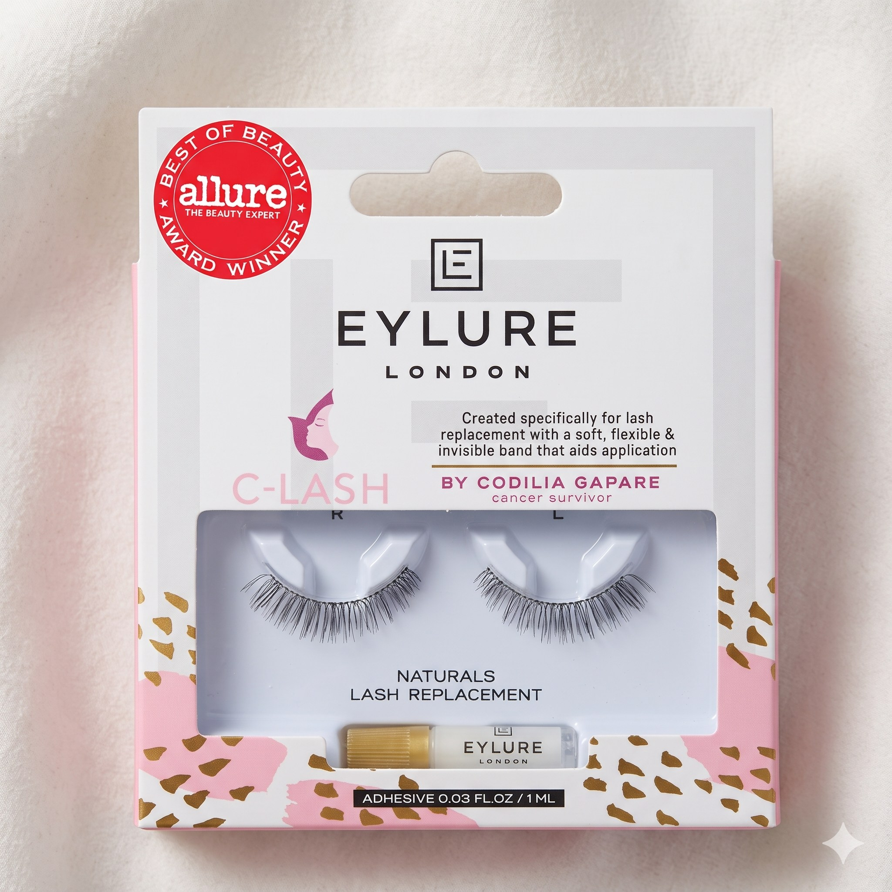

Restoring more than lashes.
Restoring confidence.
Engineered with a revolutionary self-supporting, flexible silicone band that adheres directly to bare eyelids. Gentle, weightless, and skin-safe — co-created with Eylure London for people experiencing chemotherapy, alopecia, or natural thinning.

The Silicone Innovation That Changed Everything
Traditional false lashes require healthy natural lash hairs and heavy glue. C-Lash reinvents the band from the skin up.
Self-Supporting Band
The patented curved edge gives the lash an intrinsic base that stays upright on bare eyelids, preventing the drooping or flipping common with standard strip lashes.
Featherlight Silicone
Soft, flexible, hypoallergenic silicone contours to eye movement. Zero stiff sharp edges and zero tugging on delicate, healing eyelid tissue.
All-Day Natural Blend
The translucent band disappears against every skin tone. Wispy, tapered synthetic fibres mimic natural eyelash growth for soft, dignified daily wear.
Designed for Your Lash Journey
Choose from soft daytime flutter, gentle elongation, or value care packs. Every box includes latex-free sensitive adhesive.
On all orders over £25 • Same-day dispatch before 2pm
Formulated without harsh glues or animal mink
Gently clean with warm water and store in protective case
See C-Lash in Action
Watch real application tutorials, patient transformations, and founder insights directly from our Instagram community.


Codilia Gapare
Breast Cancer Survivor • C-Lash Patent Holder
“I created C-Lash for people just like me. Losing lashes made me lose my expression. Getting them back made me feel like myself.”
When Codilia was diagnosed with breast cancer, she prepared for hair loss. But losing her eyelashes proved emotionally devastating: it took away the natural frame of her face and her facial expressions.
Traditional false eyelashes pinched her hypersensitive, hair-free eyelids and required natural eyelashes to anchor onto. Unwilling to accept that, Codilia prototyped a medical silicone edge that contours independently to bare skin.
Partnering with false lash giant Eylure London, C-Lash has now helped tens of thousands of women worldwide regain their dignity, expression, and joy.
Everything You Need to Know
Expert guidance for hyper-sensitive skin, active oncology treatment, and gentle care.
C-Lash features Codilia Gapare's patented flexible silicone edge that provides a stable, wide-contact base adhering directly to the skin of your eyelid. Unlike traditional lashes that must sit on top of your existing lash hairs, C-Lash is specifically designed to adhere to hairless skin.
Yes! Thousands of patients have worn C-Lash during chemotherapy. The silicone band is flexible, soft, and inert. However, because skin sensitivity varies, we always advise doing a small 24-hour patch test with the glue on your inner arm or jawline, and consulting with your oncology nurse or dermatologist.
Yes. Every pack includes a gentle, latex-free, and hypoallergenic mini adhesive formulated specifically for sensitive eyelid skin. It holds securely throughout the day and releases effortlessly without tugging or residue.
Yes, each pair can typically be reused up to 5 times with proper care. After removing, gently peel off any leftover adhesive from the silicone strip using your fingertips or tweezers, wipe clean with a warm damp cotton pad, and store in the original tray to retain the ergonomic curve.
Hold the lash against your eyelid before applying glue to check the fit. If trimming is required, always cut from the outer edge in small increments between lash clusters. Or, choose our Petite Lash Replacement which is pre-proportioned for smaller eyes straight out of the box!